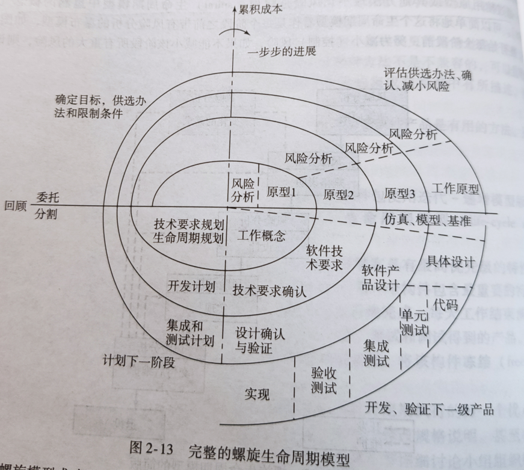

第一章 软件工程的范畴
软件工程出现的原因
软件工程是一门学科，目的是生产出没有错误的软件，按时并且在预算内交付，满足用户的需求。更进一步，当用户的需求改变时，软件必须易于修改
生命周期模型是对在构建一个软件产品时应当完成的步骤的描述
对某个具体的软件产品所做的一系列实际步骤，从概念开发到最终推出，称为该产品的生命周期
构造特定产品的实际步骤
传统模型(1970)
需求阶段
概念的研究和细化
提取客户需求
分析（规格说明）阶段
分析客户需求
草拟规格说明文档
给出软件项目管理计划
“期望软件产品做什么？”
设计阶段
结构设计：将作为整体的产品分解成各个部分，称为模块
详细设计：设计每个模块
得到两个设计文档“软件产品是如何做的？”
实现阶段
编码
单元测试
集成测试
验收测试
交付后维护
纠错性维护（软件修复）
增强性维护（软件改进）：完善性维护、适应性维护
退役
维护：软件因为存在问题或有改进和适应性需求时，对代码及相应文档所进行的修改
1.6 （传统声明周期模型）为什么没有计划阶段
在明确知道将要开发什么之前，无法得出一个准确详尽的计划
传统范型中的计划活动
- 在项目的开始，对管理需求和分析阶段进行初步计划
- 一旦客户批准了规格说明，那么就制定出项目管理计划（SPMP） software project management plan
- 管理者需要监督项目管理计划（SPMP）在整个项目当中的执行情况
结论：
- 计划活动贯穿于软件生命周期的始终
- 没有独立的计划阶段
1.7 （传统声明周期模型）为什么没有测试阶段
软件开发完成，交付给客户以前才进行测试显然是太晚了
传统范型的测试活动
验证Verification
- 在每一个阶段结束前测试(太迟)
确认Validation
在项目要结束是测试(太迟)
结论
整个生命周期都需要测试
测试是如下人员的责任
- 每个软件开发人员，以及
- 软件质量保证software quality assurance（SQA）小组人员
没有完全独立的测试阶段
1.8（传统声明周期模型）为什么没有文档阶段
开发完成交付之前才写文档显然太迟
文档必须是最新的
- 软件行业中人员的流动性较大
- 前一阶段的文档不完整、不正确或不是最新的，会造成不完整的设计和实现
- 除非提供文档来说明对一个软件产品期望的功能和性能，否则不可能测试该软件产品是否正确工作
- 没有完整正确的文档，维护相当困难
结论
- 文档活动应当伴随着建造软件产品的所有其它活动进行
- 没有独立的文档阶段
第二章 软件生命周期模型
软件生命周期模型
1. 进化树生命周期模型
在每一幕的结束
有一个基线，一个完成的制品集
2. 迭代递增模型
3. 编码—修补生命周期模型
- 缺乏需求、分析和设计；
- 对于小程序可以操作很好；
- 对于一定规模的软件可能导致开销增大；
- 常见于以代码行唯一度量项目进展的组织内；
- 是最简单的软件开发方式，也是最糟糕的方式；
- 应在开发之前，选择一个合适的生命周期模型
4. 瀑布生命周期模型
把软件开发过程划分成若干阶段，每个阶段的任务相对独立;
在软件生存期的每个阶段都采用科学的管理技术和良好的方法与技术。每个阶段结束之前，都从技术和管理两个角度进行严格的审查，经确认之后才开始下一阶段的工作。
- 瀑布流模型的每个阶段都包含测试
- 瀑布流模型的一个关键点是，在任何阶段的文档完成并且该阶段的产品被软件质量保证小组认可之前，该阶段是没有完成的。
瀑布模型是文档驱动的，各个阶段不交叉。
客户只能在整个产品完成编程后才首次看到能够工作的产品缺乏的需求、分析和设计。
5. 快速原型开发生命周期模型
第一步是建造一个快速原型，并让客户和未来的用户使用快速原型。一旦客户认为快速原型确实满足率大多数需求，开发者就可以拟制规格说明文档，并对产品将能够满足用户的而实际要求满怀信心
基本特性：快
快速原型的内部结构无关紧要，最重要的是快速建造原型并快速修改，以反映客户的需求；
主要优点是：产品的开发从快速原型到交付的产品基本上是线性的；
6. 开源生命周期模型
两个阶段（关键： 个人自愿从事于开源项目，不索取报酬）
第一阶段：首先, 某个人建立一个初始版本
- 通过互联网提供下载
- 接着, 如果有人感兴趣
- 初始版本被下载
- 合作开发
- 产品被扩展
第二阶段的活动
- 报告并纠正缺陷（纠正性维护）
- 增加额外的功能（完善性维护）
- 移植软件到新的环境（适应性维护）
- 第二阶段仅仅包括交付后维护（“co-developers” 更应该称为“co-maintainers）
不开源的软件由拥有该软件的公司雇员小组进行维护和测试
- 用户可以提交故障（failure）报告，但因为没有源码，不能提交缺陷（fault）报告
开源软件由不拿报酬的志愿者维护
- 鼓励用户提交故障报告和缺陷报告
核心小组
- 提交缺陷报告
- 管理开源项目
- 负责纠正缺陷
外围小组
- 用户选择不时的提交缺陷报告
7. 敏捷过程（Agile Processes）
一种颇有有争议的新的软件开发方法
第一步是软件开发小组确定客户希望产品支持的各种特性（情节）
开发小组评估每个特性所需要的时间和费用
客户使用成本-效益分析方法选择下一次要构造的特性
一个特性分成更小的任务
开发过程
首先制定出任务的测试用例，测试驱动开发
结对编程（两个程序员在一台计算机前一起工作）
- 缺点：结对编程要求持续的不被打断的时间；对编程不适用于害羞或专横的个人或者两个没有经验的程序员；
任务的连续集成（结对的程序员并行地实现任务）
每天更换小组成员的编码同伴；
各任务所使用的测试用例保留下来并应用到所有进一步的集成测试中
极限编程Extreme Programming（XP）不同通常软件开发的特性：
- XP小组的计算机设在一个大房间的中心，大房间中有许多彼此相连的小隔间；
- 一个客户代表一直与XP小组一起工作；
- 没有一个人能够连续两周超时工作；
- 没有规格说明，而是XP小组的所有一同完成规格说明、分析、设计、编码和测试；
- 重组（在建造出各种构件之前没有概要设计步骤），设计需要不断调整
- 适合中小规模的项目
原则
- 不强调分析和设计
- 很早开始实现的工作，认为能工作的软件远比文档重要
- 对变更能快速响应
- 与客户的紧密协作
特点
- 频繁提交软件版本，理想情况是每2到3周提交一次
- 站立会议（为了缩短开会时间），成员一次回答
已在一些小型项目中得到成功应用，但对于大型项目，一般并不适用
适用于需求模糊和变更频繁的情况
交付后软件维护成本可能很大
现在做一个全面的评估，为时尚早
8. 同步—稳定模型
Microsoft’s 生命周期模型
潜在客户会谈
提取出对顾客具有最高优先级的特性列表，拟制规格说明文档
划分为3-4个构件，第一个构件包含最重要的特性，第二个构件包含次重要的特性
每个构件由小组并行开发
工作同步，每天将所有组件集成在一起进行测试和调试得到的产品
稳定化，在组件开发结束时进行，检测遗留差错并修改，然后冻结，即规格说明不再修改，同步步骤保证各个组件总能一起工作。
9. 螺旋模型
通过使用原型或其他方法最小化风险是螺旋生命周期模型中蕴含的概念
软件开发中存在各种风险，构建原型是最小化某些类型风险的一个途径
概念证明原型：与快速原型开发生命周期模型中的快速原型不同，更像是一个工程样机。例如某个计算能否执行的足够快，构造一个原型，只计算测试该计算的时间。
可简单地将简版螺旋生命周期模型看作是每个阶段之前带有风险分析的瀑布模型
原型可提供关于某类风险的信息，但原型不能完全解决问题。例如不能解决人物离职，人手不够。 
每一阶段开始于（左上）确定目标、实现目标可供选择的方法。从风险角度分析这些策略。如果风险不能减小，则立即停止。某些情况下，继续进行项目，但是项目规模减小。成功减少风险则进入下一个开发阶段（右下的第四象限）。 每一阶段后，评估目标策略，下一阶段的计划。
径坐标代表迄今累积的成本
角坐标代表螺旋形的进展
优点
- 支持重用现有软件，把软件质量作为特定的目标结合其中
- 螺旋模型能根据测试时间太多或太少带来的风险来确定什么时候已经对某一阶段的产品充分测试完毕
- 开发与交付后维护无明显区别
缺点
- 只适合大规模软件
- 内部开发，开发者和用户是同一组织
- 必须是小组成员能够胜任风险分析时才能使用
- 如果风险分析的成本和整个项目成本相当，或者进行风险分析会大大影响潜在的收益，则没有必要进行风险分析
螺旋模型的主要缺点与瀑布模型和快速原型开发模型一样，在于它假定软件是在各个分离的阶段开发的
各种应用模型的比较
| 生命周期模型 | 长处 | 短处 |
|---|---|---|
| 进化树模型 | 与现实世界软件开发最接近的模型，与迭代-递增模型等价 | |
| 迭代-递增生命周期模型 | 与现实世界软件开发最接近的模型，蕴涵统一过程方法 | |
| 编码-修补生命周期模型 | 适用于不需要任何维护的小程序 | 总的来说不适合重要的程序 |
| 瀑布生命周期模型 | 纪律性强制的方法，文档驱动 | 交付的产品可能不符合客户的要求 |
| 快速原型开发生命周期模型 | 确保交付的产品符合客户的要求 | 还没有证明无懈可击 |
| 开源生命周期模型 | 少量实例中工作相当好 | 实用性有限，通常不太起作用 |
| 敏捷过程 | 客户的需求模糊时能很好地工作 | 似乎只适合小规模项目 |
| 同步-稳定生命周期模型 | 能满足未来用户的要求，确保各组件能够成功集成 | 除了在Microsoft公司，还没有广泛地应用 |
| 螺旋生命周期模型 | 风险驱动 | 只能用于大型的内部软件产品，开发者必须精通风险分析和风险排除 |
迭代和递增
在实际中，谈论独立的“分析阶段”没有太多意义，分析阶段的操作散布在生命周期的各个阶段
软件开发的基本过程是迭代的，一个后续版本比前一个版本更接近目标
迭代是软件工程的一个固有特性
逐步求精法：集中精力处理最重要的事情，次要事情推后
事情的每个方面最终都要处理，但是要按照目前的重要性依次进行：增量过程
递增是软件工程的一个固有特性
实践中，迭代和递增相互结合使用，没有单独的需求和设计阶段，存在多个阶段的实例

每一个增量内的迭代以及在几乎每个迭代期间进行的对全部五个工作流的重复，尽管每次的比例有所改变
可以将大型项目看作是由很多小项目组成的集合(增量)
每个小型项目都扩展出需求、分析、设计、实现和测试制品
最终得到一套由制品构成的完整的软件制品
每个小项目都需要检查每个软件制品的正确性，做必要的修改, 直至满足满意
每个迭代可以看作是一个较小但是完整的瀑布模型
每次迭代均选择了软件产品的某一个特定部分，经历了
- 传统的需求阶段
- 传统的分析阶段
- 传统的设计阶段
- 传统的实现阶段
迭代-递增模型的优点
- 减少项目失败可能性，提高生产率，降低缺陷率
- 在早期（而不是晚期）缓解高风险（技术、需求、目标、可用性等）
- 早期可见的进展
- 早期反馈，用户参与调整，会更接近用户需求
- 可控复杂性；团队不会被长期且复杂的步骤所淹没
- 一次迭代中的经验可以被系统的用于改进开发过程本身，并反复进行下去
第三章 软件过程
考点：统一过程 核心工作流（基本概念）
什么是软件过程
软件过程是我们生产软件的方式。
它包括方法学和隐含的生命周期模型、技术、所使用的的工具，以及最重要的人。
统一过程
统一的”过程“实际是一种方法。
统一过程并不是具体的一系列步骤，应视为一种自适应的方法学。要根据具体所开发的软件产品进行修改。
UML代表统一建模语言 ，即UML是用来表示（模拟）目标软件产品的工具。
面向对象范型是一个迭代和递增的方法。每个工作流由一些步骤组成，为了完成该工作流，重复执行工作流的步骤直到开发小组成员认为得到了一个精确的UML图。
1. 需求流
需求流的目标：确定客户需求
任务：
理解应用领域
业务建模，利用UML描述业务过程。业务模型是说明目标产品代价合理性的文档。
确定客户的约束条件
- 最终期限
- 并行运行(Parallel running )
- 可移植性(Portability)
- 可靠性(Reliability)
- 响应时间(Rapid response timeCost)
- 费用
最初对客户需求的调研有时称为概念探究。
2. 分析流
分析流目标：分析和提取需求，以获得正确开发软件产品和易于维护产品所必需的需求
为什么没有在需求流中进行?
- 需求流的输出必须完全能够被客户理解
- 分析流的输出必须是精确的
需求制品必须用客户的语言表达，所有的自然语言都是不精确的
需求流和分析流的分离是必要的
规格说明文档
- 产品的规格说明文档构成产品的合同
- 精确的用语
- 不能有冲突和矛盾
- 不能省略
- 完备性
规格说明文档对于测试和维护都是必需的
软件项目管理计划
一旦客户确定了规格说明，就可以开始详细的计划和估算
软件项目管理计划包含
- 可交付的制品（用户可得到的）
- 里程碑（客户得到它们的时间）（时间估算）
- 预算（成本估算）
制定SPMP的最早时间
3. 设计流
目标：是细化分析流的制品，使程序员根据设计制品可以直接编程实现
传统设计
体系结构设计（总体设计）
- 将产品分解为各个模块
详细设计
设计每个模块:
- 数据结构
- 算法
面向对象设计
- 类”（可被视为特殊类型的模块）在分析流期间被提取出来，在设计流期间进行设计。
- 传统的体系结构设计对应于分析流的一部分
- 传统的详细设计对应于设计流的一部分
4. 实现流
实现流的目标：是用选择的实现语言实现目标软件产品
大型软件产品被分为一个个的子系统，子系统包含组件和代码制品分别由单个程序员实现。
5. 测试流
每个开发人员和维护人员需要确保自己的工作是正确的。因此，软件人员要对自己所开发的或维护的每个软件制品进行测试。
软件人员确信一个制品是正确的，就交给质量保证小组进行独立测试。
制品的可追踪性是成功测试的重要保证
在统一过程中，测试从始至终与其他工作流并行进行
测试流的性质随着被测试的制品的不同而不同
需求制品
如果需求制品在软件产品的整个生命周期是可测试的，那么必须具有可追踪性。开发者能够通过后来的制品向前追踪确保它们是客户的真实反映。同时也简化了SQA小组的工作。
分析制品
规格说明文档
交付软件中一个主要的错误来源是规格说明中的错误。
评审的方式检查。分析小组和客户双方的代表都出席，会议由SQA小组主持。确定分析制品是否正确，是否存在错误。
软件项目管理计划
SQA小组仔细地检查SPMP计划。特别关注周期估算和成本估算。一个方法：管理者在详细的计划开始之前得到两个（或多个）独立的关于时间和成本的估算，然后调和它们之间明显的不同。最好的方法是评审
设计制品
设计评审方式与规格说明的评审相似。考虑到设计具有技术的特性，客户通常不参加评审。设计和SQA小组从整体上走查设计，走查每个独立的设计制品，以确保设计是正确的。
实现制品
每一个组件实现以后应当进行测试
- 单元测试
每一次迭代完成以后，应当把组件组合起来进行测试
- 集成测试
集成测试完成，并且完成了整个产品的开发
- 产品测试
产品完成并安装在客户的电脑上
- 验收测试
α测试
- α测试是由一个用户在开发者的场所进行的，软件在开发者对用户的“指导下”进行测试。第一版通常称谓α版软件，经修改α版后的软件称为β版软件。
β测试
- β测试是由软件的最终用户在一个或多个用户场所进行的，与α测试不同，开发者通常不在测试现场，因此，β测试是软件在一个开发者不能控制的环境中的“活的”应用，用户记录所有在β测试中遇到的（真正的或想象的）问题，并定期把这些问题报告给开发者，在接到β测试的问题报告后，开发者对软件进行最后的修改，然后着手准备向所有的用户发布最终的软件产品。
统一过程的各阶段
考点：统一过程的各个阶段
统一过程的阶段与递增的各个阶段想对应
初始阶段（Inception phase）
初始阶段的目标是决定是否值得开发目标软件产品，明确提出的软件产品在经济上是否可行
需求流的两个步骤是理解问题域并建造一个业务模型。
步骤
- 获取领域知识
- 构建业务模型
- 限定目标产品的范围
- 开始制定初始的业务案例
初始商业案例
在开始进行项目前（初始阶段结束时），需要回答如下问题：
- 建议的软件产品有经济效益吗？
- 建议的软件产品能够按时交付吗？
- 开发该软件产品会带来哪些风险？如何降低这些风险？
下一步是明确风险。有三类主要风险：
- 技术风险
- 没有得到正确的需求
- 没有得到正确的体系结构
风险分级：
- 首先解决重要的风险
相关工作流
需求流：执行需求流
分析流：在开始阶段执行少量的分析流工作，提取设计体系结构所需的信息
设计流：少量设计工作
实现流：基本不进行编码工作，但有时候需要建立证明原型，确定可行性
测试流：测试工作，证明确定的需求是正确的
计划和文档
计划
- 在初始阶段的开始没有足够的信息计划整个阶段，只是对初始阶段本身做计划
- 在初始阶段的尾声可以为细化阶段做计划
初始阶段可交付的文档包括
- 领域模型的初始版本
- 业务模型的初始版本
- 需求制品的初始版本
- 分析制品的初始版本
- 体系结构的初始版本
- 风险的初始清单
- 初始用例
- 对细化阶段的计划
- 商业案例的初始版本（收入预计、市场估算和成本估算）
获得最后一项，商业案例的初始版本，是开始阶段全部的目标。
细化阶段（Elaboration phase）
细化阶段的目标是细化最初的需求：细化体系结构，监控风险和细化它们的属性，细化商业案例，生成软件项目管理计划
这些任务几乎与下面各阶段密切相关。完成需求流（第11章）、实质上执行整个分析流（第13章）以及然后开始结构设计（8.5.4节）
细化阶段可提交的内容
- 完成的问题域模型
- 完成的业务模型
- 完成的需求制品
- 完成的分析制品
- 体系结构的更新版本
- 风险的更新清单
- 软件项目管理计划
- 完成的业务案例
构造阶段（Construction phase）
构建阶段的目标：是产生软件产品的第一个可工作版本，也称β版本
这个阶段强调的是实现和测试此软件产品。
主要任务是
实现
测试
- 单元测试
- 集成测试
- 产品测试
构建阶段可交付产品包括
- 初始用户手册和其他相关手册
- 全部制品（ β版）
- 完成的体系结构
- 更新的风险清单
- 软件项目管理计划（用于该项目的其余部分）
- 必要时，更新业务案例
转换阶段（Transition phase）
转换阶段的目标：是确保客户的需求切实得到满足
- 产品中的错误得到纠正
- 完成用户手册
- 之前阶段没有发现的风险
转换阶段是由来自β版的反馈驱动的
可交付的内容包括
- 全部制品
- 完成的手册
软件成熟度模型
考点：软件成熟度模型 每一级大致是什么水平 （某一级的用来开发会怎么样）
SEI的能力成熟度模型（CMM）是一组用于改进软件过程的相关策略，它不考虑实际使用的软件生命周期模型（成熟度概念是过程本身良好程度的度量）
级别1：初始级
软件过程的特点是无秩序的，甚至是混乱的。几乎没有什么过程是经过妥善定义的，成功往往依赖于个人或小组的努力。
级别2：可重复（repeatable）级
建立了基本的项目管理过程来跟踪成本、进度和功能特性。制定了必要的过程纪律，能重复早先类似应用项目取得的成功。
级别3：已定义级
己将管理和工程活动两方面的软件过程文档化、标准化，并综合成该机构的标准软件过程。所有项目均使用经批准、剪裁的标准软件过程来开发和维护软件。
级别4：已管理级
收集对软件过程和产品质量的详细度量值，对软件过程和产品都有定量的理解和控制。
级别5：优化级
整个组织关注软件过程改进的持续性、预见及增强自身，防止缺陷及问题的发生。过程的量化反馈和先进的新思想、新技术促使过程不断改进。
第四章 软件小组
如何组织小组
第五章 软件工程工具
逐步求精 成本效益分析 等 知道概念 5.9 修订版 变种版 5.10配置 5.10.2基准
第六章 测试
6.1 了解 P91 6.2 非执行测试 6.2.4 走查和审查的对比 6.4 实用性、可靠性、健壮性、性能、正确性 6.5 可以不看
第七章 从模块到对象
模块的特性、有哪些内聚，有哪些耦合（会考） 7.4 7.5（有兴趣看）
本章的重点是围绕设计讨论理论概念，如何实现在第14章
什么是模块
模块：是词汇上邻接的程序语句序列，它由边界元素限制范围，并且每一个模块都有自己的聚合标识符。 词汇邻接：在代码中是邻接的 边界元素：类似于C++ java中的{ ... } 模块聚合标识符：代表整个模块的一个名字
组合化/结构化设计作（C/SD）为降低维护成本的途径，提供了将产品分割为模块的基本原理。每个模块内聚有最大的关联，而模块之间有最小的关联。
模块内聚：模块内部交互的强度
模块耦合：两个模块之间的交互程度。
模块操作：指模块做什么，也就是它的行为。例如模块m的操作是计算它的参数的平方根
模块逻辑：指模块如何完成它的操作。计算平方根的的特定方法是牛顿方法。
模块背景：模块的特定用途。使用模块m计算一个双精度整数的平方根。
C/SD的关键是分配给每个模块的名称是它的操作，而不是它的逻辑或背景
内聚
1. 偶然性内聚（差）
如果一个模块执行多个完全不相干的操作，则具有偶然内聚性。
举例:
- print_next_line, （打印下一行）
- reverse_string_of_characters_comprising_second_parameter, (把第二个参数的字母顺序反序)
缺点：
偶然性内聚使得产品的可维护性退化
偶然性内聚模块不具有可重用性
解决办法：
把具有偶然性内聚的模块分成更小的模块，使得每个小模块执行一个操作
2. 逻辑性内聚
一个模块如果实现一系列相关的操作，其中每个操作均由调用模块选择调用，则该模块具有逻辑性内聚。
例1:
x1function_code = 7;2new_operation (function_code, dummy_1, dummy_2, dummy_3);3//(dummy_1, dummy_2, and dummy_3 都是伪变量)4//如果function_code等于7，则不适用三个伪变量）
在这个例子中，调用new_operation时有四个参数，但如注释行所声明的，如果function_code=7则不适用它们中的三个参数。通常对于纠错性和增强维护来说，这降低了可读性。
例2: 一个执行所有输入和输出的对象
缺点：
- 接口较难以理解
- 多个操作的代码相互纠缠在一起，导致严重的维护问题。
- 难以重用
3. 时间性内聚
当模块执行一系列与时间相关的操作时，则该模块具有时间性内聚。
例子：open_old_master_file，new_master_file，transaction_file，and print_file; initialize_sales_district_table，read_first_transaction_record，read_first_old_master_record (a.k.a. perform_initialization)
模块中操作之间的关联很弱，但是与其他模块中的操作却有很强的关联
例如：sales_district_table（销售地区表）可能在此模块中被初始化，而更新、打印功能可能位于其他模块。对于表的一处修改要引起对各个模块中的操作修改。
重用的可能性不大
4. 过程性内聚
如果一个模块执行一系列与产品要遵循的步骤顺序有关的操作，则该模块具有过程性内聚。 例子: read_part_number_and_update_repair_record_on_master_file（读取零件编号并更新主文件上的维修记录）
过程性内聚的缺点：
操作之间按照执行顺序关联，仍是较弱连接，因而在其他产品中的重用性很小。
解决方法：把具有过程性内聚的模块分割为单独的模块，每个模块执行一个操作
5. 通信性内聚
如果一个模块执行一系列与产品要遵循的步骤顺序有关的操作，并且操作都在相同的数据上进行，则该模块就有通信性内聚。
例 1：update_record_in_database_and_write_it_to_audit_trail（更新数据库中的记录，并将其写入审计线索）
例 2：calculate_new_coordinates_and_send_them_to_terminal（计算新的坐标并将其发送到终端机）
模块中的个操作是紧密相连的
通讯性内聚的缺点：与偶然性、逻辑性、时间性、过程性内聚相同，仍是缺乏可重用性
解决方法：把模块分割为单独的模块，每个模块执行一个操作
6. 功能性内聚
如果一个模块只执行一个操作，或者只达到一个单一目标，则该模块具有功能性内聚。
例1：get_temperature_of_furnace（获取炉温） 例2：compute_orbital_of_electron（计算电子轨道） 例3：write_to_diskette（写入软盘） 例4：calculate_sales_commission（计算销售佣金）
优点：
适合重用
维护
- 便于对错误进行隔离
- 发生时有较小的对其他模块的影响
产品功能的扩充
7. 信息性内聚（好）
如果模块进行许多操作，每个操作都有自己的入口，同时每个操作都有独立的代码，而且所有的操作都在相同的数据结构上完成，则该模块具有信息性内聚。
具有信息性内聚的模块主要用来实现一种抽象的数据类型
耦合
1. 内容耦合 （差）
如果两个模块中的一个直接引用了另外一个模块中的内容，则这两个模块之间是内容耦合。
例1：模块p直接更改模块q的一个语句
例2：根据模块q内部的数字转移，模块p引用模块q的局部数据
例3：模块p分支转移到模块q的一个局部标号
内容耦合的缺点：对于q的任何更改，甚至是对q用其他编译器或者汇编器的重新编译，都会导致对p进行更改。
2. 共用耦合
如果两个模块都可以存取相同的全局变量，则它们之间是共用耦合。
例子：模块cca 和 ccb 都可以访问和改变global_variable，而不是通过传递参数相互通信
例子2：模块 cca 和 ccb 都能访问同一个数据库并且能读和写相同的记录（如果数据库是只读的，不算共用耦合）
缺点：
与结构化的编程思想相矛盾，因为生成的代码完全不可读
如果module_3，module_4或其他模块可以更改全局变量global_variable,那么循环何时停止?
模块可能有副影响
- 可读性受到影响，必须读完整个模块才可以明确该模块做了什么
如果在一个模块中对一个全局变量的声明进行了修改 ，那么必须修改访问该全局变量的所有模块。
共用耦合的模块难以被重用。
即使模块p不改变，p与其他模块间的共用耦合实例数也会变化很大。这称为秘密共用耦合（Clandestine common coupling）
共用耦合模块暴露出更多的数据：导致计算机犯罪
3. 控制耦合
如果一个模块给另外一个模块传递控制要素，则它们是控制耦合 ，也就是说，一个模块明确地控制另一个模块的逻辑
例1：具有逻辑性内聚的模块传递一个操作代码
例2：传递控制开关作为参数
模块 p 调用模块 q，模块q传递信息，模块p决定收到信息后进行说明操作，那么q在传递数据。如果q不仅传回信息，而且还传回模块p应执行说明操作的指示，那么二者之间存在控制耦合，
缺点：
- 两个模块是非独立的，模块q（被调用模块）要知道模块p的内部结构和逻辑，影响重用。
- 控制耦合与逻辑性内聚的模块有关联
4. 印记耦合
如果把数据结构作为参数进行传递，而且被调用的模块只是对该数据结构上的个别元素进行操作，则两个模块是印记耦合。
缺点：
如果没有通读整个模块，不能知晓哪些数据域被引用或者被改写。
例如：calculate_withholding (employee_record)，计算扣除的工资（雇员记录），不阅读整个模块，不清楚模块访问或修改的是employee_record的哪些字段。
- 传递了更多的数据，对数据访问无法控制的问题和接踵而来的计算机犯罪将再次出现。
如果数据结构的所有元素被全部读取或者同时被更改，那么将数据结构作为参数进行传递并没有错
5. 数据耦合 （好）
如果两个模块的所有参数是同类数据项，则两个模块之间属于数据耦合。也就是说买个参数或者是简单参数或者是数据结构（所有的元素均被调用的模块使用）。
例如：
display_time_of_arrival (flight_number);
compute_product (first_number, second_number);
get_job_with_highest_priority (job_queue);
如果是数据耦合，则内容耦合、共用耦合、控制耦合和印记耦合中的困难将不会出现。
便于维护，因为一个模块的修改几乎不会是另一个模块产生退化错误。
耦合的重要性
耦合紧密
- 模块p的更改也要求对模块q进行更改
- 相应的更改没有进行，将会发生错误
一个好的设计需要高内聚、低耦合
第八章 可重用性和可移植性
可重用可移植 概念
第九章 计划和估算
计划、 9.2.2 成本的估算技术 各个方法的概念（重点看）（讲清楚为什么要选这种方法，不要求掌握具体估算模型，知道即可） 9.5 项目管理计划
第十一章 需求
考点：需求流的过程，用例图（会考）
需求流的真正目的是确定客户需要什么软件。
需求流概述
第一步是理解应用域，也就是目标产品应用的特定环境。
第二步建立业务模型，使用UML图描述客户的商业过程。该业务模型用来确定客户的初始需求，然后应用迭代法。
术语“需求工程”有时用于描述需求流期间完成使命。发现客户的需求的过程称为“需求启发”（或需求捕获）。推敲和扩充初始需求的过程称为“需求分析 ”。
理解应用领域
需求小组的成员必须熟悉应用领域。特别重要的一点是使用正确术语。
建立术语表。（术语表：在该领域应用的技术词汇列表和对应的解释。）
业务模型
注：业务模型即商业模型
业务模型是对公司的商业过程进行的描述
建立业务模型的原因首先是业务模型提供了对客户整体商业行为的理解，通过这个理解，开发者可以向客户提出建议，需要对客户生意的哪些部分进行计算化。
为了建立业务模型，开发者需要对各种商业过程有具体的理解。
获得建立业务模型所需的信息可以使用不同的技术，主要是访谈
访谈
需求小组的成员会见客户公司的成员，并且公司成员提出所有的相关信息
两种基本类型的问题
- 受限回答：受限回答的问题要求一个特定的答案
- 自由回答：自由回答的问题鼓励受访者畅所欲言
两种基本类型的访谈
- 程式化的访谈：提出特定的、预先计划好的、通常是受限回答的问题
- 非程式化的访谈：根据受访者的回答而提出，大多数这些问题是自由回答的
访谈结束后，访谈者必须准备一份书面报告，非常有帮助的做法是将报告的一份副本送给受访者
其他技术
调查问卷、直接观察
用例
用例为软件产品本身和软件产品的使用者之间的交互建立模型
初始需求
初始需求可以基于初始的商业模型
基于初始的业务模型提出初始需求，然后经过和客户的进一步讨论，精炼对应用域的理解和业务模型，从而精炼需求。
需求是动态的—— 经常有些变动。维护一个可能的需求表,带有需求的用例,这些用例得到了开发小组各成员和客户的认可。
两种类型的需求：
功能性需求：指定目标产品必须能够执行的行为，通常用输入和输出来表示
非功能性需求:指定目标产品本身的属性，例如
- 平台限制
- 响应时间
- 可靠性
功能性需求在需求和分析阶段处理
一些非功能需求要等到设计流才能处理，原因是要处理某些非功能性需求，要到需求和分析阶段结束以后才能清楚
总结：如何完成需求流的工作
迭代：
- 获得对应用域的理解
- 提出业务模型
- 提出需求
直到需求让人满意
第十二章 传统的分析
考点：P220 数据流图（经常考） 数据字典词条怎么表示 12.7为止 12.8及之后了解即可
规格说明文档必须满足两个相互矛盾的要求：
- 客户必须是清晰和可理解的，因为客户可能不是计算机专家。
- 说明文档必须完整而详细，因为这实际上是开展设计可得到的唯一的信息来源。
规格说明文档
规格说明文档是客户和开发者之间的一种合同。它明确规定了产品必须做什么，以及对产品的约束。
典型的约束有：最后期限、并行运行 、可移植性、可靠性、快速响应时间
规格说明文档的一个至关重要的组成部分是验收标准集。重点是清楚地给出一系列测试，可以用它向客户表明产品确实满足规格说明，并且开发者的工作完成了。
非形式化的规格说明文档由自然语言组成，例如: 英语、法语、科萨语。自然语言不是一个规定产品的好方法
结构化系统分析
分析和设计技术划分为非形式化、半形式化和形式化。Gane和Sarsen的结构化系统分析属于半形式化规格说明技术
确定需求之后，结构化系统分析的第一步是确定逻辑数据流，与它相对立的是物理数据流。通过画数据流图（DFD）完成。
步骤1：画DFD
数据流图通过识别需求文档或快速原型内的数据流来建造。每个单独的数据流或者开始和结束于原数据或目的数据（双方框表示），或者开始和结束于数据存储（用开口矩形表示）。数据有一个或多个处理（用圆角矩形表示）进行转换。在每个后续的求精中，将一个新的数据流加到DFD，或者通过增加进一步的细节，求精现有的数据流。
步骤2：决定哪部分计算机化以及如何计算机化
取决于客户准备花多少钱，使用成本/效益分析法。
步骤3：确定数据流的细节
决定什么数据必须进入各种数据流，逐步求精每一个流。产品较大的情况下，可用数据字典。
典型数据字典
步骤4：定义处理的逻辑
可以用决策树来描述
步骤5：定义数据存储
定义每个数据的存储和它的表示的准确内容
步骤6：定义物理资源
对每个文件，具体指定：文件名、组织结构、存储介质、块因子、向下到域一级的记录。如果使用一个数据库管理系统，要在这里指定每个表的相关信息
步骤7：确定输入-输出规格说明
具体制定输入格式、输入屏幕、输出格式。尽可能详细
步骤8：确定大小
有必要计算数值数据，将在步骤9中用它来确定硬件要求。这包括：输入量（每天或每小时）、每个要打印报表的频率和最后期限、在CPU和大容量存储器之间传递的每种类型的记录的大小和数量、每个文件的大小
步骤9：确定硬件要求
计算出大容量存储器的要求。
确定用于备份的大容量存储器的要求
输入要求
输出设备
存在的硬件是否合适?如果不合适，可以建议需要什么以及应当购买还是租用。
缺陷
不能用于确定响应时间
输入输出的通道数量只能粗略地测量
估计CPU大小和定时的估计也不准确
其他的分析技术也存在这些缺陷
有穷状态机
实例研究 一个保险箱有个一号码锁，有三个位置，分别标记为1、2和3、转盘可以转向左或转向右（L或R）。这样，在任何时候，可能有六种转盘动作：1L, 1R, 2L, 2R, 3L, 3R. 保险箱的号码组合是1L, 3R, 2L; 任何其他的转盘动作将引起警报
状态集 J 是{保险箱锁定, A, B, 保险箱解锁, 声音报警}
输入集 K 是{1L, 1R, 2L, 2R, 3L, 3R}
转换函数 T 的描述见表11-2
最初状态 S 是“保险箱锁定”
最终状态集 F 是 {保险箱解锁, 声音报警}
FSM 转换规则有如下形式
当前状态 [菜单] 与 事件 [选择的选项] 下一个状态
一个有用的FSM扩展是将第6个组成元素加到前面的5元组中：谓词集P的每个谓词是产品的全局状态Y的函数。
转换规则如下形式
当前状态 与 事件 与 谓词 下一个状态
第十三章 面向对象分析（重点）
考点：画类图（经常考） 状态图（有的时候会考） 顺序图、协作图
面向对象分析（OOA）是面向对象范型的半形式化分析技术。
统一过程几乎是面向对象的软件产品必选的方法论。
面向对象分析是面向对象范型的关键部分。完成这个工作流，即开始抽取类。用例和类是开发面向对象软件产品的基础。
分析流
分析流有两个目标
从需求流的角度看，分析流的目标是 得到对需求更深的理解。
从设计和实现流的角度看，分析流的目标是 按设计和实现易于维护的思路来描述需求
统一过程是用例驱动的。在分析流期间，用例以软件产品的类描述。统一过程有三种类：实体类、边界类和控制类。
实体类：为长期存在的信息建模，例如：账户类、投资类
边界类：为软件产品和它的参与者之间的交互行为建模。通常与输入和输出相关。例如：投资报表类、抵押报表类
控制类：为复杂的计算和算法建模。例如：估算本周可用资金的算法类
三种类的UML符号如下所示。它们是构造型，即UML扩展。（UML的有优点是允许定义额外的结构，该结构不是UML的一部分，但却是准确地为特定系统建立模型所必须的）
抽取实体类
实体类抽取包括三个迭代和递增完成的步骤：
- 功能模型。提出所有用例的场景。（场景是用例的一个实例）
- 实体类建模。确定实体类和他们的属性，然后确定实体类之间的交互关系和交互行为。以类图的形式提供这个信息
- 动态建模。确定每个实体类或子类的操作或对他们的操作，以状态表的形式提供这个信息。
功能建模
用例提供了整个功能的一般描述
场景是用例的一个实例
研究场景是为了获得对目标产品的深入理解
场景包括正常场景和异常场景
实体类建模
提取实体类和它们的属性，并用一个ＵＭＬ类图表示
确定实体类的一个方法是从用例和场景推断类
其他方法：名词抽取、CRC卡片
名词抽取
阶段1 精炼问题定义。用一个段落描述软件产品
阶段2 分辨名词
CRC卡片
对每个类，软件开发小组填写一个卡片，卡片式有类的名称、功能（职责）和它达成功能要调用的其他类的列表（协作）
优点：在小组成员之间的交互可以突出显示一个类中遗漏的或不正确的字段,不管是属性还是方法
缺点：这个方法通常不是一个确定实体类的好方法，除非小组成员在相应的应用领域有相当的经验
动态建模
动态建模的目标是生成每个类的状态图
测试流：面向对象分析
CRC 卡片是一种优秀的测试技术
类图的迭代, 重新考虑是否需要进一步求精
抽取边界类和控制类
通常情况下，每个输入屏幕、输出屏幕、打印的报表由它自己的边界类建模，每个重要的计算由控制类进行建模
第十四章 设计
各种设计方法（了解） P293 详细设计怎么表示（伪代码、流程图等方式表示）
一个产品有两个基本方面，一个是它的操作，一个是操作作用在其上的数据。因此，设计一个产品的两种基本方法是面向操作设计和面向数据设计。因为对象将操作和数据结合在一起，所以面向对象技术结合了面向操作和面向数据设计的特性。
设计和抽象
传统的设计阶段主要由三个活动组成：结构化设计、详细设计、设计测试
设计过程的输入时规格说明文档，描述产品要做什么，输出时设计文档，描述产品如何做才能完成。
- 结构化设计（概要设计、逻辑设计、高层设计）。对产品进行模块化分解，即仔细分析规格说明，产生具有期望功能的模块结构。这个活动的输出时模块的列表，以及它们如何相互连接的说明。
- 详细设计（模块化设计、物理设计、低层设计）。对每个模块（或类）进行详细设计。例如选择特定的算法或数据结构。
- 测试并不是仅在结构化设计和详细设计已经完成后进行的某项工作。在面向对象设计的情况下，测试流是与设计流同步完成的
面向操作设计
将一个产品分解成为具有高内聚和低耦合的模块。两个达到这个设计目标的实用的传统技术：数据流分析和事务分析。
数据流分析
数据流分析是一项得到具有高内聚模块的传统技术。该技术的输入是一个数据流图（一旦完成了DFD，软件设计者就有了关于产品的输入和输出的精确和完整的信息）。
输入的最高抽象点：输入失去作为输入的性质，简单地变为有产品操作的内部数据的点
输出的最高抽象点：数据流图中的输出可以被如此识别的第一点，而不是被识别为某种内部数据。
使用这两个抽象点，将产品分解成为三个模块：输入模块、转换模块和输出模块
逐步继续该过程，直到该设计具有高内聚的模块组成。
可能需要对分解做出微小的修改，以获得最小可能的耦合 。例如因为DFA没有将耦合考虑在内，在一个用DFA构建的设计中，稍不注意就会出现控制耦合。在这种情况下，所需要做的就是修改所涉及的两个模块，以便在它们之间传递数据而不是控制。
例如:设计一个产品的问题，它将一个文件名作为输入，并返回文件中的字数，就像UNIX中的wc实用程序
结构图第一次求精
两个模块具有通信性内聚：一个模块执行一系列操作，这些操作与一组步骤相关，而这些操作都运行于相同的数据之上，那么这个模块具有通信性内聚。
全部8个模块拥有功能性内聚
结构化设计已经完成，下一步就是详细设计
详细设计的两种格式:
列表
程序描述语言（PDL，program description language，伪码）本质上是由所选的实现语言的控制语句连接起来的注释组成。
数据分析流扩展
多个输入流，多个输出流。处理方法：对每个输入、输出流找到输入、输出的最高抽象点。
事务分析
第十五章 实现
P308 基本概念 良好的编程实践 继承的版方式 测试的方式 （黑盒测试 边界值、等价类测试） 玻璃盒测试（知道概念） 15.16 净室 （知道概念）
第十六章 交付后维护
维护的概念 16.2 为什么交付后维护是必要的（重点）
第十七章 UML的进一步讨论
基本概念（如统一建模语言是什么，类图有哪些关系） 统一建模语言的各个模型（了解概念）